911SC — FB photo selects, v2 (full 105-photo set)
One frame per story, no repeats: hero, rear 3/4, cabin, stance, dash, odometer,
mood, engine, frunk, underbody, wheels, tail. Post in this order — FB truncates at the first
photo, sells on the first four.
Recommended — post in this order (12)
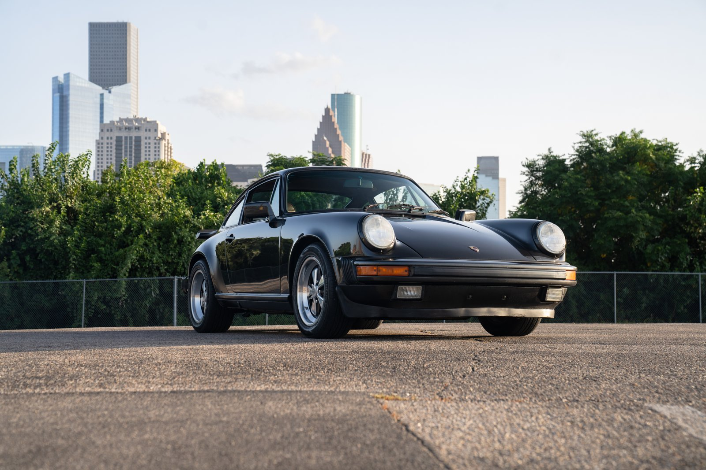
#1 · photo 105 HERO — front 3/4, downtown skyline, golden hour.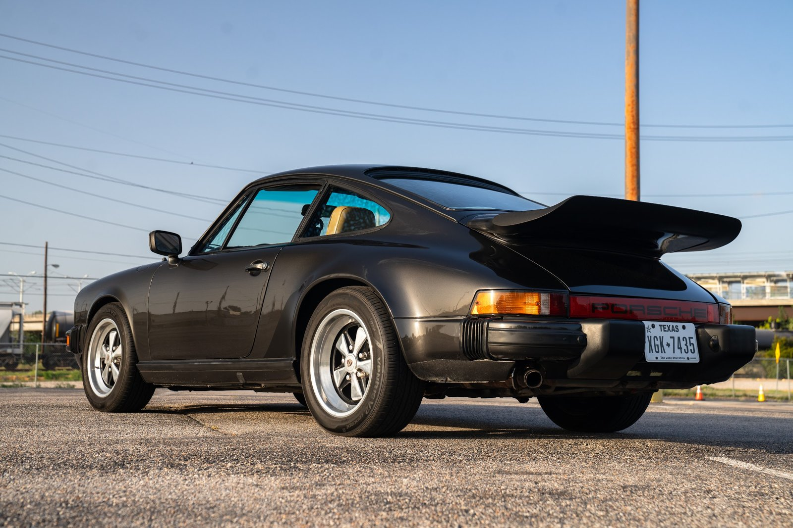
#2 · photo 92 Rear 3/4 — whale tail, stance, plate on. The missing angle, found.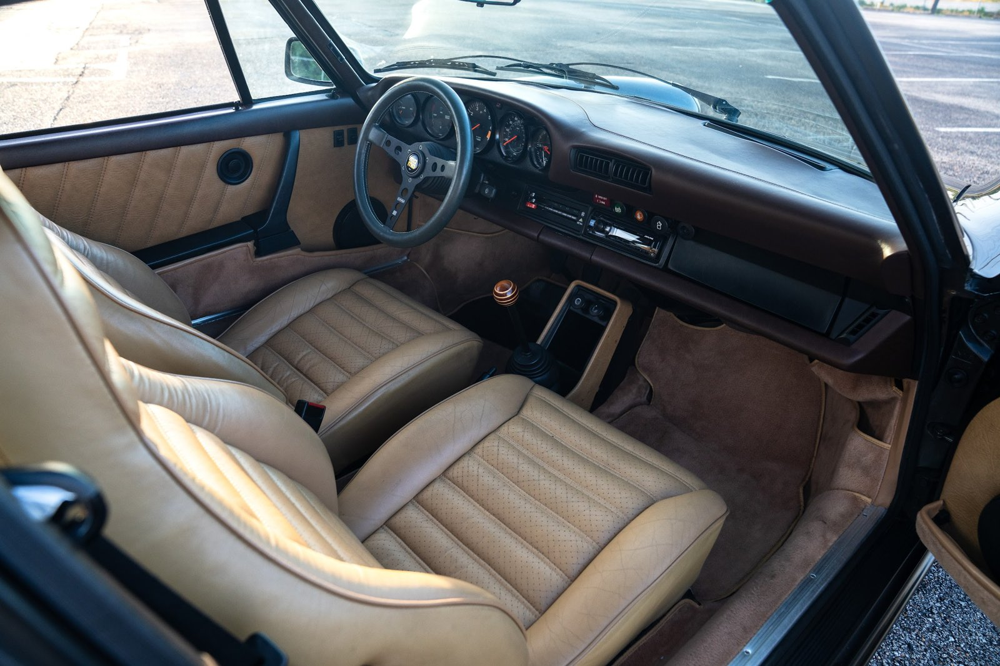
#3 · photo 53 Interior hero — full cabin through the open door, warm light.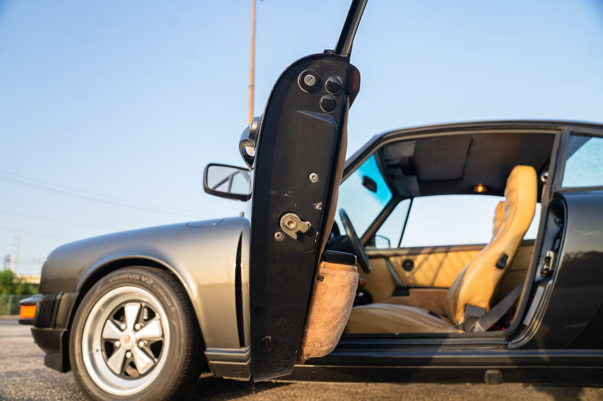
#4 · photo 21 Doors-open side — stance, Fuchs, tan interior peeking.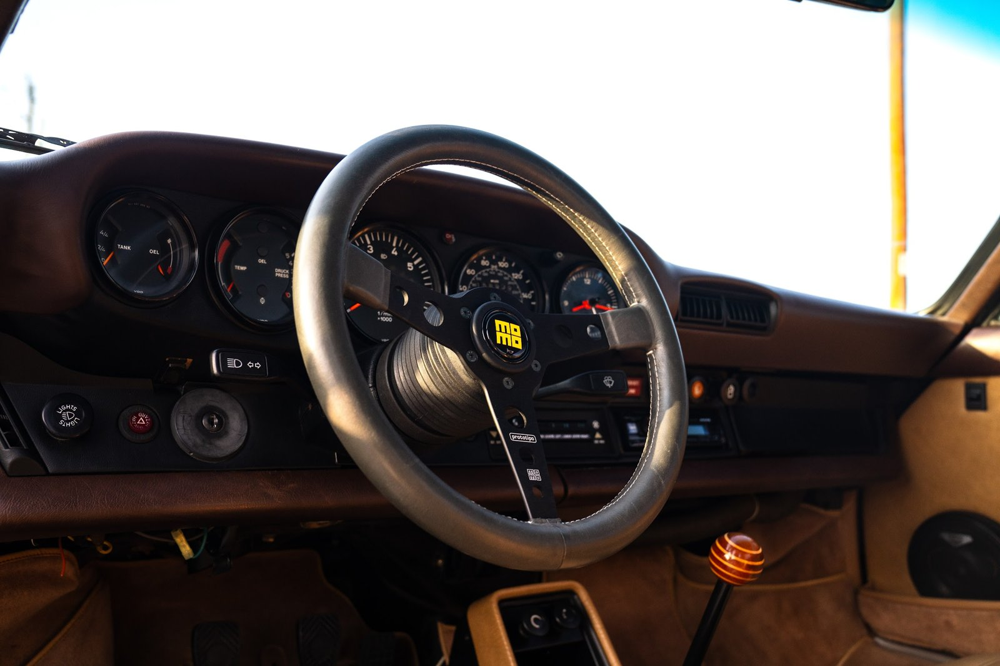
#5 · photo 56 Dash wide — MOMO, VDO gauges, everything in one frame.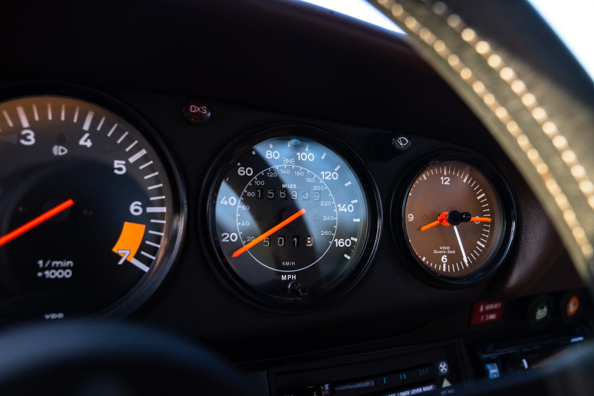
#6 · photo 64 Speedometer/odometer close-up — the mileage honesty shot.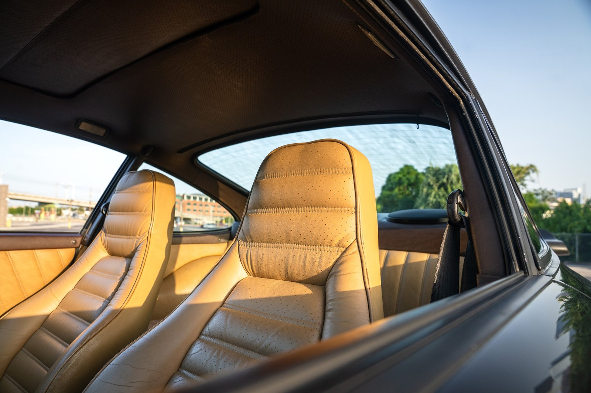
#7 · photo 76 Seats in golden light through the glass — the mood shot.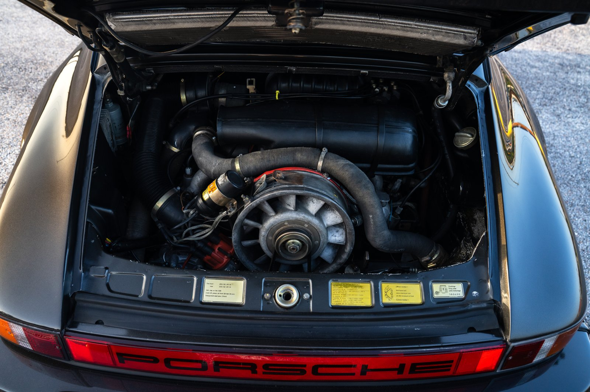
#8 · photo 16 Engine bay wide, decklid up — the $9.5k top end's home.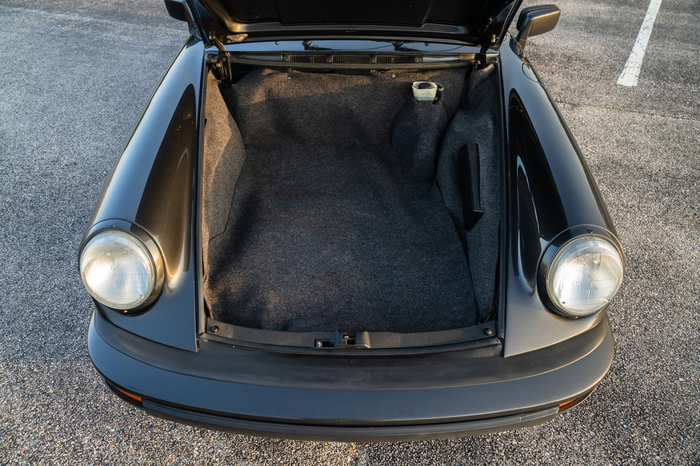
#9 · photo 6 Frunk open, front-on — nothing hidden.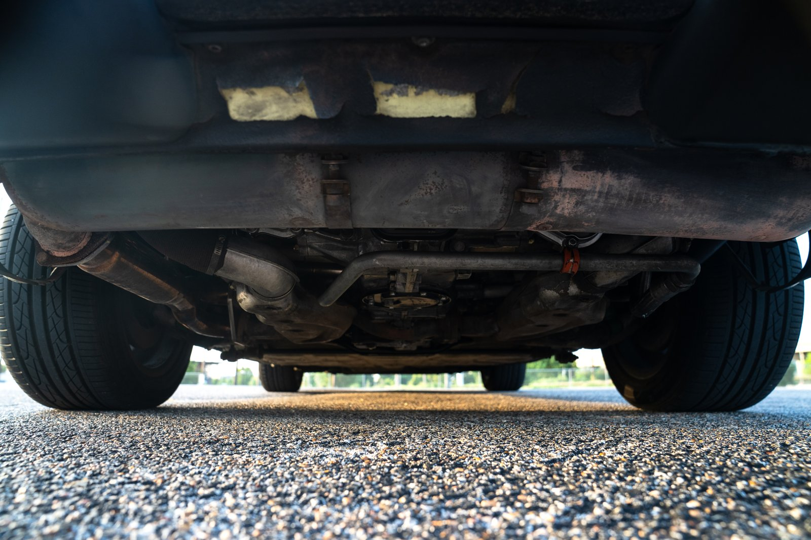
#10 · photo 19 Underbody — FB buyers never get this; instant credibility.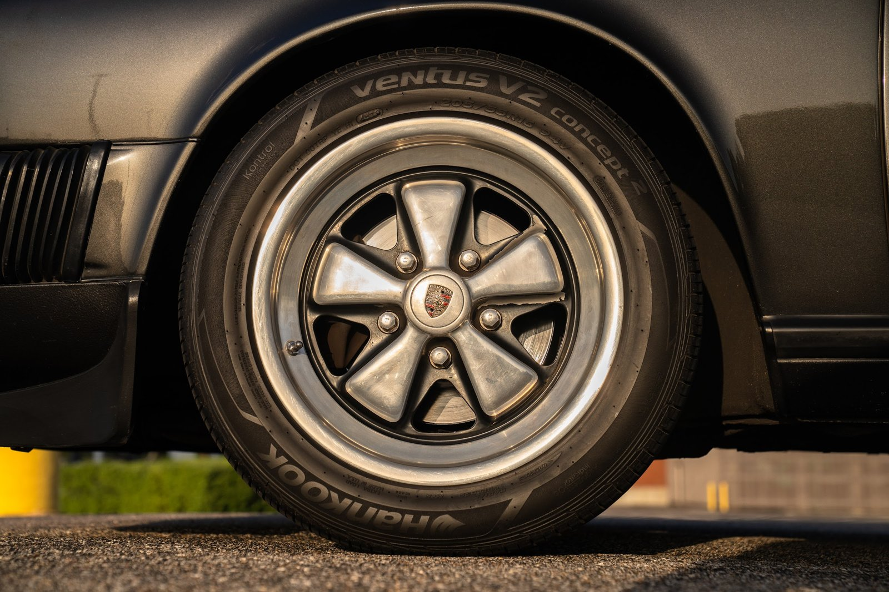
#11 · photo 87 Fuchs + Hankook close-up — wheels and rubber in one.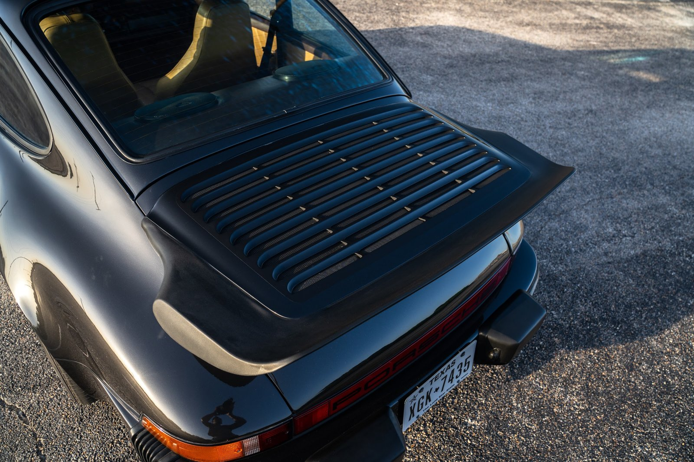
#12 · photo 95 Whale tail deck detail over the rear valance.
Alternates / swap-ins (12)